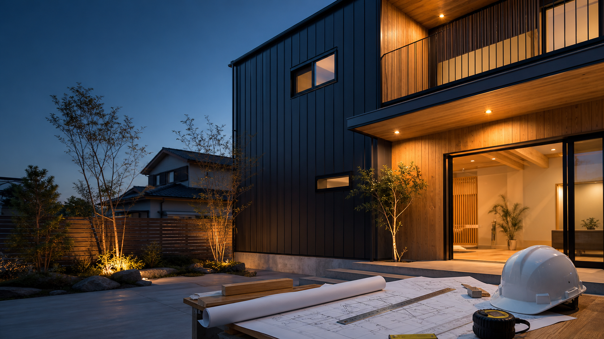

建設業許可、損害保険、保証内容を見える化。

施工前後、素材、工期、費用目安をセットで掲載。
対応エリアと工事内容を市区町村単位で整理。
施工事例と見積
スマホで写真、費用目安、対応エリア、相談導線を確認しやすく配置。
地域名と工事種別
リフォーム、外構、屋根、修繕などの工事内容を検索向けに整理。
見積・現地調査・写真相談
問い合わせ前に必要な情報を示し、相談内容を具体化しやすくする。
施工写真・保証・エリア
実績写真、保証内容、対応地域、工期目安を差し替えやすく設計。
Works Gallery
写真、費用、工期まで見せる。売れる施工実績ページ。
建設・工務店HPで重要なのは「上手そう」ではなく「自分の工事も頼めそう」と思えること。施工分類、Before/After、費用目安、地域をまとめて表示します。
外壁・屋根リフォーム
札幌市西区 / 工期18日 / 耐雪仕様
98万円〜戸建フルリノベーション
断熱、間取り、内装をまとめて刷新。
620万円〜外構・カーポート
積雪地域向けの動線と駐車計画。
32万円〜
Before / After
見た瞬間に違いが伝わる、施工前後の見せ方。
写真だけを並べるのではなく、課題、施工内容、費用目安、工期を一緒に表示します。
Before雨漏りと断熱不足
After高断熱外壁へ更新
Service Lineup
問い合わせが来やすい工事項目を、最初から商品化。
見積依頼に必要な情報を先に出すことで、電話やフォームの質を上げます。
塗装、張り替え、板金、雨漏り調査。
キッチン、浴室、洗面、トイレ改修。
窓、壁、床下、暖房効率の改善。
駐車場、カーポート、フェンス、庭。
Estimate Readiness
現地調査前に、依頼者が送るべき情報を見える化する。
工務店・リフォームサイトでは、施工写真だけでなく、写真の撮り方、対象エリア、保証、工期目安を先に見せると見積相談に進みやすくなります。
送る写真の例
外観、劣化箇所、室内、図面など、概算見積に必要な写真を案内。
3〜5枚で相談可対応エリア
市区町村、出張費、現地調査の可否を分かりやすく表示。
札幌近郊対応保証と保険
工事保証、損害保険、許可番号を掲載し、発注前の安心材料にします。
保証範囲を明記工期の目安
小工事、外壁、リノベなど工事項目ごとに期間の目安を提示。
工期相談へ誘導
Estimate materials
写真
住所
希望時期
Photo Estimate
写真送付、現地確認、正式見積まで迷わせない。
工務店サイトは「どこまで送ればいいか」が分からないと離脱します。相談内容、写真、住所、希望時期をフォーム風に見せ、問い合わせ前の不安を減らします。
Project Flow
見積から引き渡しまで、発注前の不安を潰す。
大まかな工事内容と現場写真を送付。
寸法、劣化状態、周辺条件を確認。
費用、工期、保証範囲を説明。
工程共有、写真報告、完了確認まで対応。
Social Proof
施工事例を、見積相談の理由に変える。
建設・工務店は、写真と地域性と見積の流れが見えることで相談されやすくなります。
見積相談へ誘導
写真相談施工事例から電話・フォーム・写真送付相談へ進めます。
事例で信頼を作る
Before/After工事内容、地域、工期、金額帯を見せ、比較しやすくします。
対応エリアを明確化
地域SEO市区町村と工事種別を掲載し、地域案件につなげます。
Estimate Menu
施工内容と概算の入口を見せて、見積相談へ。
建設・工務店は、価格が見えないと相談のハードルが上がります。小規模修繕、リフォーム、外構を分けて、相談しやすい入口を作ります。
小規模修繕
現地確認まず相談しやすい入口。
- 写真相談
- 対応エリア確認
- 概算見積
リフォーム
要見積主力案件へつなげるプラン。
- 現地調査
- 施工事例比較
- 工期目安
外構・店舗
個別相談高単価案件の相談導線。
- 図面相談
- 保証説明
- 施工範囲確認
Before Contact
施工実績から見積相談まで、信頼の順番で見せる。
建設・工務店は、写真の迫力だけではなく、対応エリア、工期、保証、見積の流れが見えることで相談につながります。問い合わせ前の確認項目をページ内に置ける構成です。
施工実績を比較しやすく
新築、リフォーム、外構、店舗改装などをカテゴリ別に掲載。金額帯や工期も合わせて見せられます。
対応エリアと保証を明記
施工可能地域、現地調査、保証、アフター対応を整理。相談前に確認されやすい不安を先に消します。
見積の流れを具体化
相談、現地確認、概算、正式見積、施工開始までを段階表示。高額商材でも問い合わせしやすくします。
FAQ
見積前に聞かれる条件を、サイト内で整理する。
建設・工務店では、対応エリア、工期、保証、概算相談の流れが見えると問い合わせしやすくなります。
施工事例はどのくらい必要ですか。
最初は3件程度でも公開できます。写真、工事内容、地域、工期、金額帯をセットで見せると伝わりやすくなります。
対応エリアを細かく出せますか。
市区町村や対応範囲を掲載できます。地域名を明確にすることで、地元検索からの相談にもつながります。
見積の流れを載せられますか。
相談、現地確認、概算、正式見積、施工開始までを段階表示できます。
Launch Checklist
施工写真、対応エリア、見積導線を公開前に整える。
建設・工務店は、施工事例と地域性が商品力になります。写真、工期、金額帯、保証をセットで見せます。
用意する素材
施工写真、工事内容、対応エリア、保証内容、会社情報、見積フォームを用意します。
事例は3件からでも開始可能地域検索に寄せる
市区町村、工事種別、リフォーム、外構、店舗改装などの検索軸を整理します。
地域名 + 工事種別に対応見積相談を受ける
写真送付、現地調査、概算見積、正式見積の流れを示し、相談前の不安を減らします。
電話とフォームの両方に対応Responsive Preview
施工写真は大きく、スマホでは見積相談を押しやすく。
建設・工務店はPCで実績を比較され、スマホでは現場写真を見ながら問い合わせされます。施工事例と相談導線を両立します。
QA Point
施工写真、対応エリア、費用目安、見積導線をスマホで確認できるよう設計しています。
Included Package
施工実績、費用目安、現地調査の流れまで、見積相談につながる構成。
建設・工務店サイトは写真だけでは弱いです。対応エリア、工事種別、保証、現地調査、見積の流れまで見えることで、相談の質が上がります。
建設・工務店向け基本ページ
- ヒーロー、施工実績、Before / After
- 料金比較、FAQ、公開前チェック
- 見積相談、現地調査、スマホ固定CTA
見積につながる流れ
- 施工事例を見る
- 工事種別と費用目安を確認
- 写真相談または現地調査へ移動
差し替える情報
- 施工写真、費用、工期
- 対応エリア、保証、許可情報
- 問い合わせURL、電話、受付時間
Product Spec
「施工写真を並べるだけ」ではなく、見積前に必要な判断材料をまとめたテンプレートです。
Customize Map
施工写真と対応エリアを変えれば、見積相談に使える。
建設・工務店は実績情報の具体性が商品力です。施工写真、費用、工期、保証、対応地域を編集ポイントとして整理します。
工事種別・強み
リフォーム、外構、屋根、修繕など、対応できる工事内容へ変更。
施工実績・比較写真
Before / After、施工中、完成写真を差し替えて判断材料を増やす。
見積・現地調査
写真相談、現地調査、電話、フォームを見積導線として設定。
保証・許可・対応エリア
許可番号、保証内容、市区町村、工期目安を更新しやすく整理。
Handoff Guide
施工実績と対応エリアを、追加しながら育てられる。
建設・工務店サイトは実績追加が価値になります。写真と費用目安を迷わず更新できるよう整理します。
用意する素材
施工写真、Before / After、工期、費用目安、対応エリアを揃えます。
編集メモ
工事種別、保証、許可番号、見積の流れを差し替える場所を明確にします。
公開前チェック
電話、フォーム、写真相談、現地調査CTA、スマホ表示を確認します。
運用ポイント
新しい施工事例、対応エリア、キャンペーンを追加しやすくします。
Buyer Ready
実績を増やすほど強くなるサイトとして、運用更新まで見据えています。
Use This Template
施工写真、対応エリア、見積導線を差し替えて、地域工務店HPとして公開できます。
工務店、リフォーム会社、外構業者、設備工事、塗装業、住宅会社向けに調整できます。